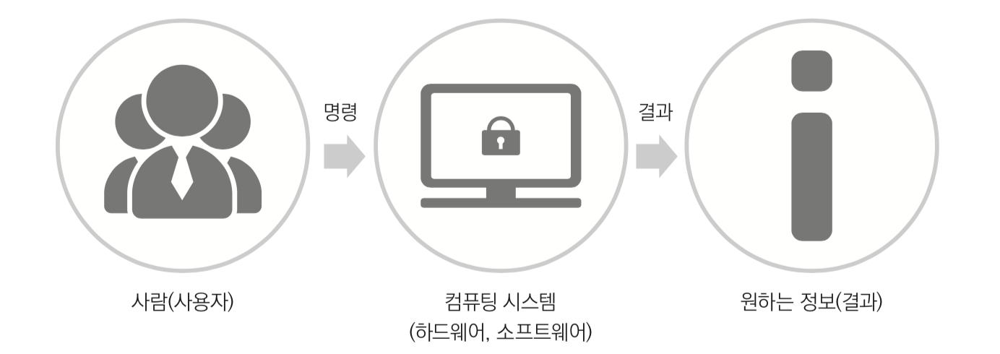

1.컴퓨팅 시스템이란?
컴퓨팅 시스템이란 다양한 자료를 입력받아 일정한 과정에 따라 계산과 처리를 하여 그 결과를 저장하거나 출력하는 장치를 말한다.
정보가 중요한 역할을 하는 현대 사회에서는 정보를 처리하고 공유하기 위해 컴퓨팅 시스템이 다양하게 사용되고 있다.
컴퓨팅 시스템은 데스크톱 컴퓨터, 노트북 컴퓨터, 스마트폰 뿐만 아니라 에어컨, 세탁기 등과 같은 가전 기기나 엘리베이터 등에도 활용되고 있다.
2.컴퓨팅 시스템의 구성

우리가 사용하는 다양한 형태의 컴퓨팅 시스템은 하드웨어와 소프트웨어로 구성된다.
하드웨어는 키보드, 본체 등과 같이 형체가 있는 기계 장치를 말하고
소프트웨어는 하드웨어를 작동시키고 제어하는 프로그램을 말한다.
다음 그림에서 비행기에 비유했을 때 하드웨어는 비행기, 소프트웨어는 운항 프로그램이라고 할 수 있다.
그렇다면 하드웨어와 소프트웨어의 역할은 무엇일까?
하드웨어는 키보드, 본체 등과 같이 형체가 있는 기계 장치를 말하고 소프트웨어는 하드웨어를 작동시키고 제어하는 프로그램을 말한다.
컴퓨팅 시스템의 하드웨어는 역할에 따라 입력 장치, 중앙 처리 장치, 기억 장치,
출력 장치로 구분할 수 있으며 각각의 장치는 주어진 신호를 받아 기능을 수행한다.
다음은 컴퓨팅 시스템의 처리 과정이다.
컴퓨팅 시스템이 어떤 일을 하기 위해서는 하드웨어를 작동하고 제어하기 위한 소프트웨어가 필요하다.
소프트웨어는 시스템 소프트웨어와 응용 소프트웨어로 구분할 수 있다.

시스템 소프트웨어는 컴퓨터를 제어 및 관리하고, 사용자가 하드웨어와 소프트웨어를 효율적으로 사용할 수 있도록 도와주는 인터페이스 역할을 한다.
대표적인 시스템 소프트웨어로는 사용자가 하드웨어와 응용 소프트웨어를 편리하게 이용할 수 있도록 도와주는 운영 체제가 있다.
운영 체제에는 윈도우, 리눅스, 맥 OS 등이 있으며, 스마트폰이나 스마트패드와 같은 모바일 기기에서 사용하는 운영 체제에는 안드로이드, iOS 등이 있다.
응용 소프트웨어는 사용자가 필요로 하는 작업을 할 수 있도록 만든 프로그램들로 업무용, 교육용, 오락용 등이 있으며,
모바일 기기용 소프트웨어는 앱 (App, 애플리케이션)으로 부르기도 한다.
3.컴퓨팅 시스템의 작동 원리
컴퓨터는 아래 그림처럼 하드웨어와 정신에 해당하는 소프트웨어의 상호 작용을 통해 일을 처리한다.
다음은 컴퓨팅 시스템의 작동 원리의 예이다.
에어컨에는 실내 온도를 감지하는 센서(입력 장치)가 있다. 센서는 감지한 온도 정보를 처리 장치에 전달하는 역할을 한다.
사람이 희망하는 온도를 버튼(입력 장치)으로 설정하고 센서가 실내 온도를 감지하면 소프트웨어는 설정 온도와 실내 온도를 비교하여
실내 온도가 높으면 에어컨 작동 신호를 보내고, 실내 온도가 낮으면 에어컨 정지 신호를 보낸다. 이렇게 온도를 비교하고 판단한 후,
다른 장치에 명령을 내리는 부분은 중앙 처리 장치(연산 · 제어 장치)에 해당한다.
신호를 받은 모터는 실외기를 작동시키거나 중지시키는데 이는 출력 장치에 해당한다.
이와 관련된 내용은 1주차-3주차 appinventer의 알고리즘 부분을 참고.